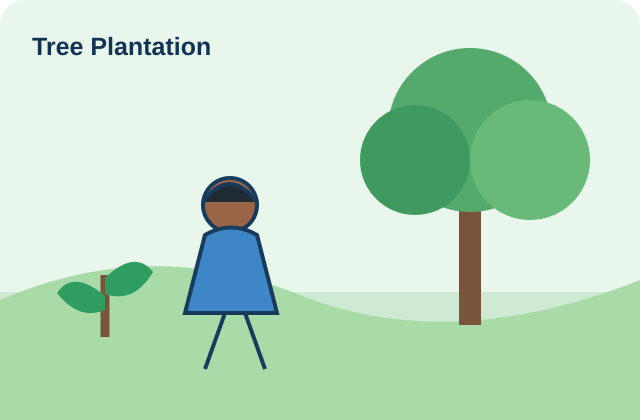
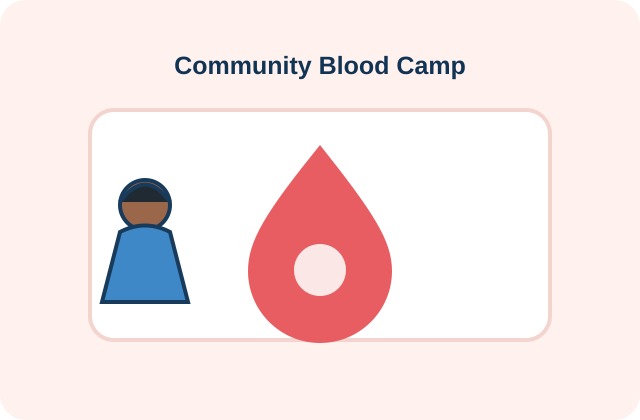
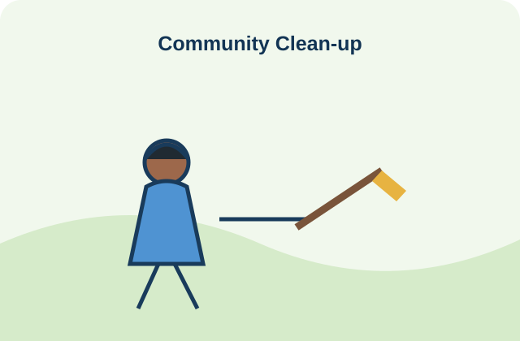

Admin Dashboard
Monitor and manage the platform.
A
1,248Total Volunteers
42Organizations
86Events
3,750Service Hours
| Name | Join Date | Status | |
|---|---|---|---|
| Karthik R | karthik@example.com | 20 Aug 2026 | Active |
| Priya S | priya@example.com | 19 Aug 2026 | Active |
| Arun Kumar | arun@example.com | 18 Aug 2026 | Active |
| Meena P | meena@example.com | 16 Aug 2026 | Pending |
Green Earth FoundationPerambalur • 6 active events
ActiveCarePlus Community TrustChennai • 4 active events
Active
Tree Plantation Drive20 Aug 2026 • Perambalur
Active
Blood Donation Camp25 Aug 2026 • Chennai
Active
Community Clean-up5 Sep 2026 • Trichy
Pending